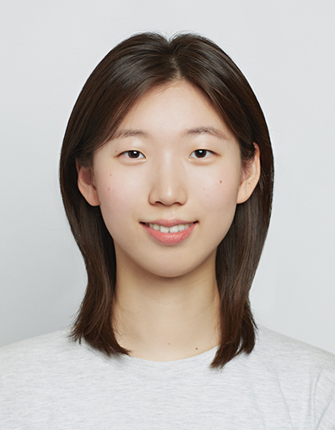

Computational Psychiatry · Clinical Neuroscience
Hello! I am a full-time research assistant in a Computational Clinical Science lab at Seoul National University. I am interested in clinical neuroscience and computational psychiatry approaches to understand neural and cognitive mechanisms underlying mental disorders.
I received my Bachelor's degree in Psychology in Seoul National University with minors in Biological sciences and Brain-Mind-Behavior.
I am currently working as a full-time research assistant in a CCS lab in SNU. Before that, I worked as a undergraduate research assistant in the same lab for a year. I also worked in A*STAR Institute for Human Development and Potential in Singapore.
2nd place, Brain-Mind-Behavior Undergraduate Research Project Seoul National University Dec 2025